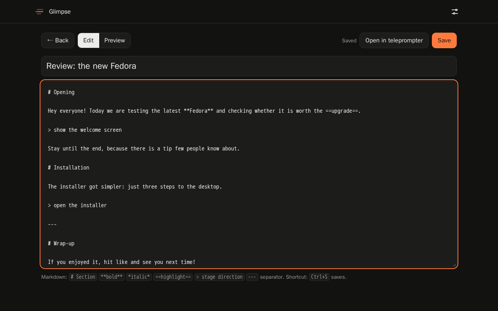
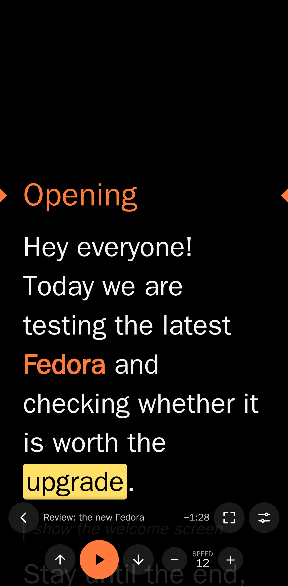
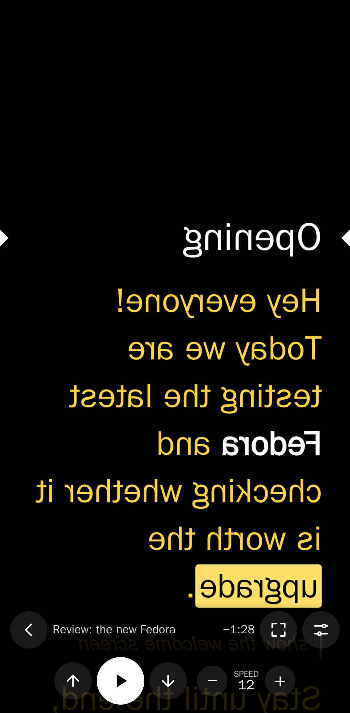
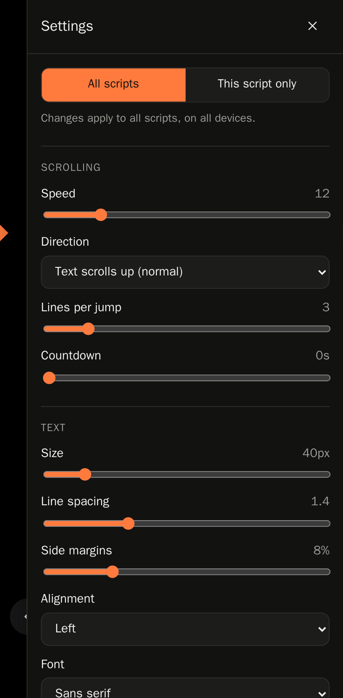
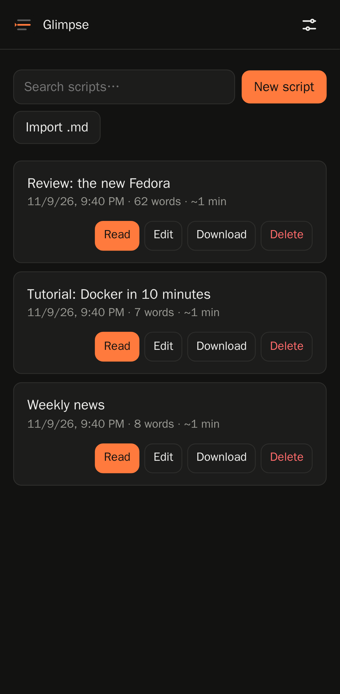
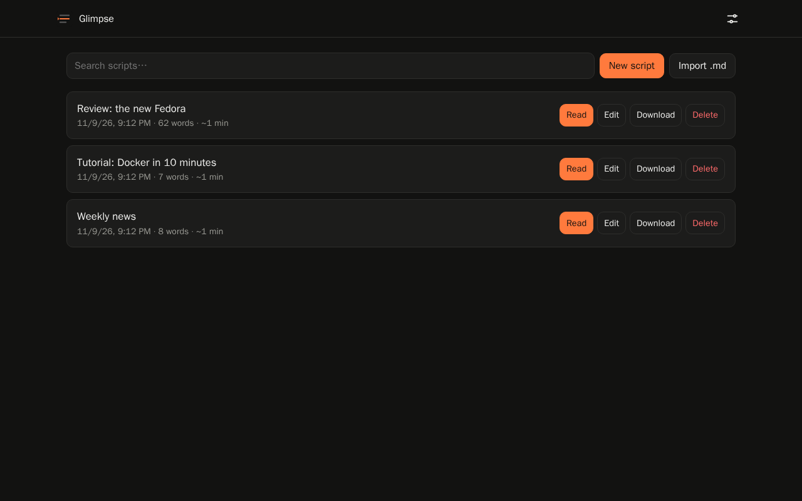
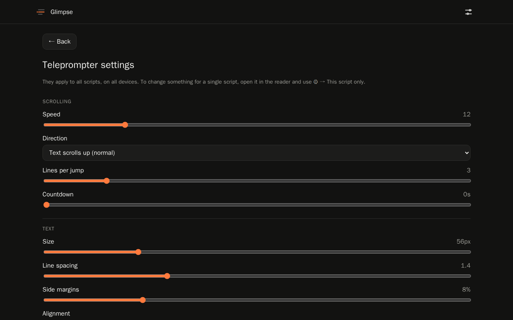
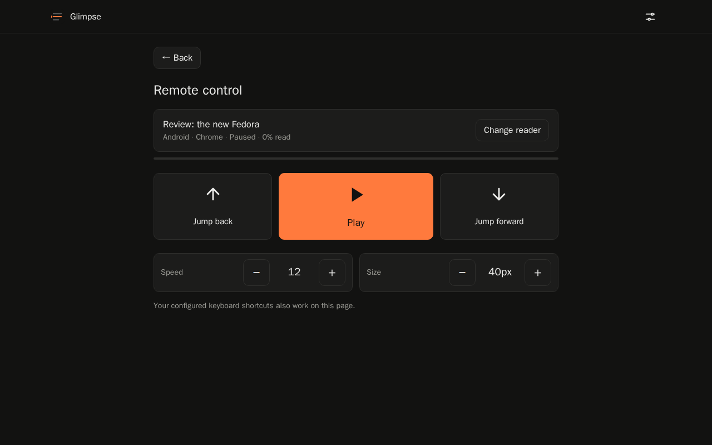
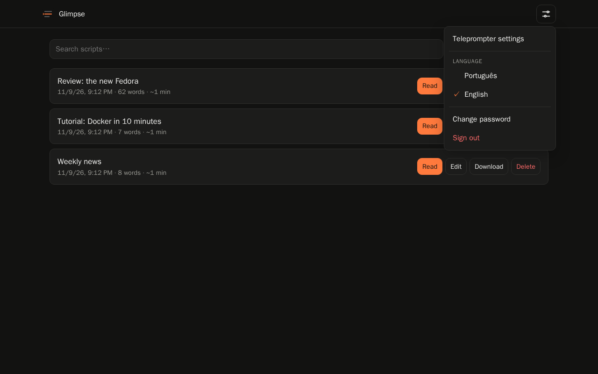
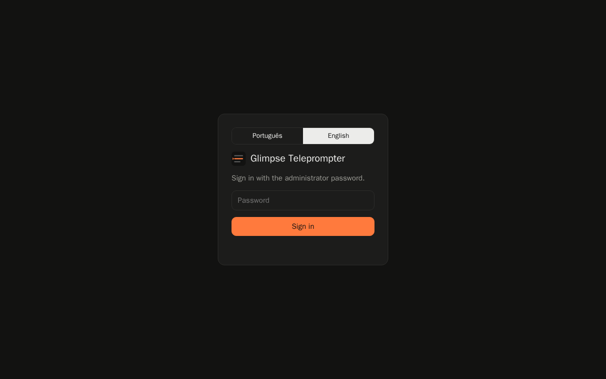

Your scripts, on any screen.
Open source · Self-hosted · Free
Glimpse is a web teleprompter you run on your own server. Write or upload scripts in Markdown from your computer, then read them on your phone or tablet, with mirroring, Bluetooth remotes and settings that follow you everywhere.
Runs with Docker on amd64 and arm64, including Raspberry Pi.
Opening
Hi! This is a real teleprompter, running right here on the page.
Read along, or take control: pause, change the speed, flip the text.
look into the camera
Your server
You write on the computer, in Markdown. The phone in front of the lens shows it, big and clear.
No account, no cloud, no tracking. Your scripts stay with you.
smile, then cut
Wrap-up
One Docker command and you are ready for the next take.
Everything a teleprompter needs
Simple to use, minimal to look at, and built for recording videos.
Markdown scripts
Write in the built-in editor or import .md files. Headings become sections, ==highlights== stand out and > notes appear as stage directions.
drag across the screen to compare
-
Universal settings
Set text size, speed and colors once: every script and device follows them. Need something different for one video? Give that script its own settings.
-
Mirroring and direction
Horizontal and vertical mirroring for beam-splitter glass, reversible scrolling, reading guide, countdown and time left.
-
Bluetooth remotes
Map any key, page turner, media button or gamepad button to any action. Shortcuts are saved on the server and work on every device.
-
Remote control from your computer
Open the remote control on a laptop and drive the reader on your phone: play, pause, speed, text size and jumps, with buttons or your keyboard. Choose which script shows on the phone, too.
-
Full screen, screen stays on
Read in full screen and the screen never turns off mid-take, even over plain HTTP on your local network.
-
Self-hosted with Docker
One container, one volume. Your scripts stay on your server; no account, no cloud, no tracking.
-
English and Portuguese
Choose the language on the sign-in screen and switch any time from the menu.
-
Open source
MIT licensed, tested on every change, with images published automatically to the GitHub Container Registry.
How it works
-
Write on your computer
Sign in from any browser, create a script or drag your .md files into the library. Each script gets a title, and you can preview the Markdown before saving.

-
Read on your phone or tablet
Open the same address on the device in front of the camera. Tap to play, drag to adjust, and use a Bluetooth remote to control the flow without touching the screen.


-
Tune it once
Adjust speed, size, colors, mirroring and shortcuts. Changes apply to all your scripts and devices, or only to the script you are reading.


A closer look





Install in a minute
You need Docker. Download the compose file and start the container:
Then open http://YOUR-SERVER:3000 and create the administrator password on the first access.
Tip: behind a reverse proxy with HTTPS you also get the browser's native Wake Lock and unrestricted full screen.
curl -O https://raw.githubusercontent.com/dionatansimioni/glimpse-teleprompter/main/docker-compose.yml
docker compose up -ddocker run -d --name glimpse -p 3000:3000 \
-v glimpse-data:/data \
ghcr.io/dionatansimioni/glimpse-teleprompter:latestDefault shortcuts
All of them can be remapped, including Bluetooth remote and gamepad buttons.
press one on your keyboard and watch it light up
| Play / pause | Space Enter K ⏯ |
|---|---|
| Speed − / + | ← → |
| Jump back / forward | ↑ ↓ Page Up Page Down |
| Previous / next section | , . |
| Smaller / larger text | [ ] |
| Mirror horizontally / vertically | M V |
| Full screen | F |